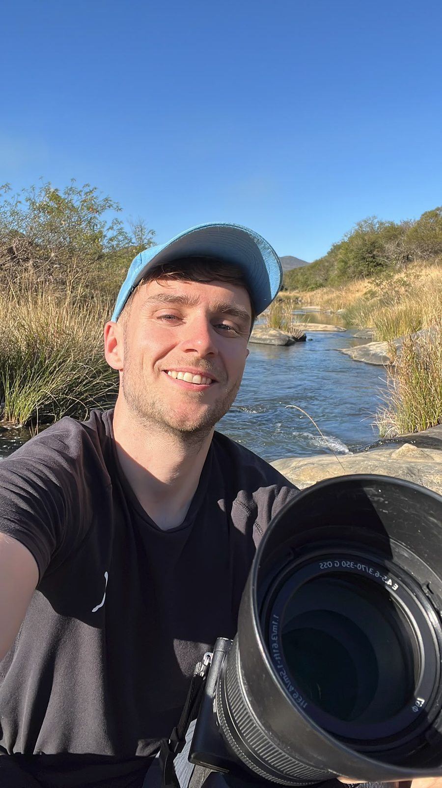
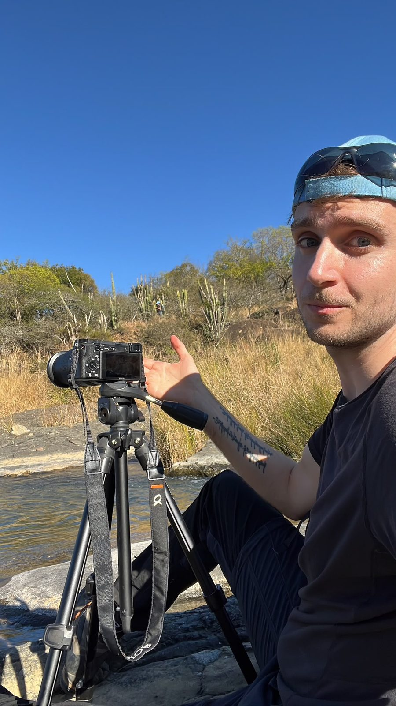

À propos
Le vivant, du plus rare au plus discret
Panthères des neiges au Kirghizistan, orques en Méditerranée, bouquetins dans les Alpes : je pars sur les traces d’animaux qui ne demandent pas à être trouvés.
Docteur en neurosciences du comportement animal, je plonge, je navigue, et je ne fais aucune hiérarchie entre le spectaculaire et l’ordinaire. Un rossignol à l’aube m’importe autant qu’un grand félin d’Asie centrale : la biodiversité se joue dans les deux.
Cette attention, je la mets au service de la protection de la nature, en images, en vidéo et par écrit, au sein du WWF Suisse et auprès de Sea Shepherd. Ma conviction tient en peu de mots : on ne protège que ce que l’on connaît, et ce que l’on a pu voir.


Explorer